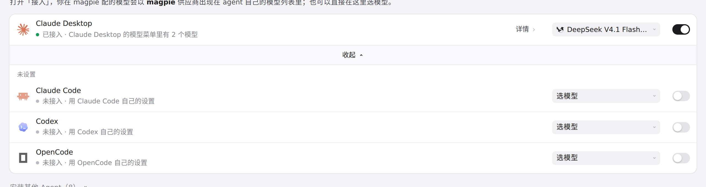
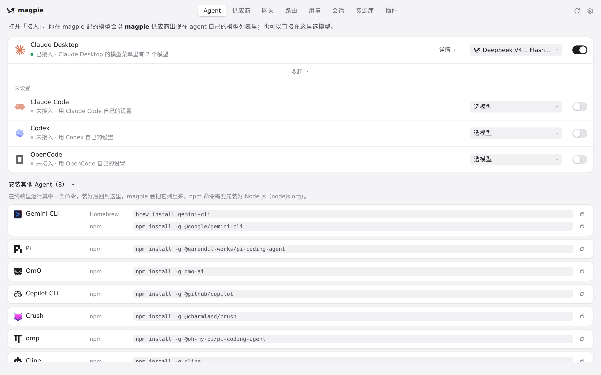
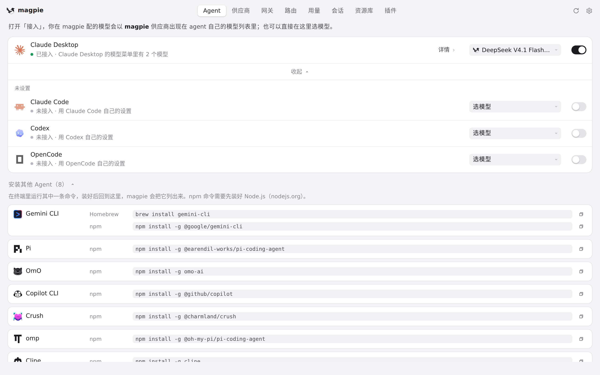
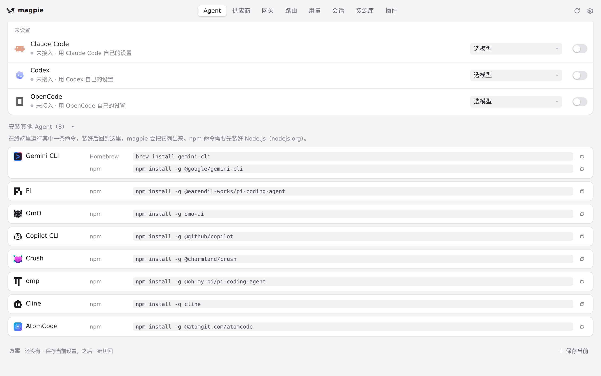
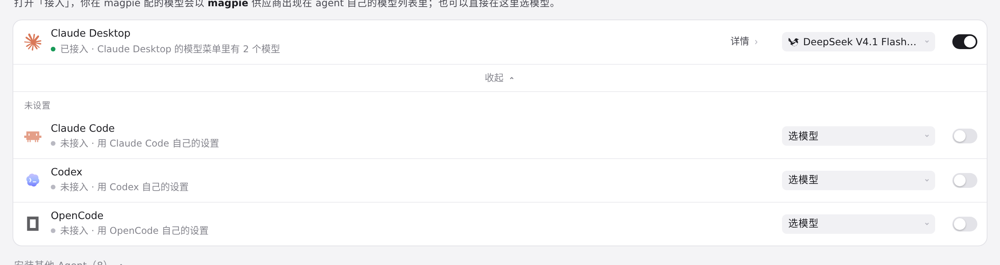

#827 界面预览
commit 4cce96a · 回到 PR · 这次改动只影响 Aside 在 Agent 页里的呈现与流程：接入开关只登记 magpie 提供方、不再动模型选择；模型字段与接入状态分列显示，并按字段给出提示；断开时先由进程内计划渲染还原预览，运行状态读不到时还多出「保存供下次启动使用」的选择。
红线是鼠标走过的轨迹，红色圆环是一次点击；底部文字是这一步在做什么。空格暂停，← → 逐段查看。

Aside 行与接入详情 · 展开「未设置」后的 Agent 列表

Aside 行与接入详情 · 可安装的 Agent 列表

接入开关：只登记提供方 · Agent 页上的完整列表与每行的接入开关

接入开关：只登记提供方 · 列表下方的安装区，列出可安装的 Agent 命令行工具

断开前的还原预览 · 刷新后 Agent 页的列表（Aside 未安装时不会出现它的行）